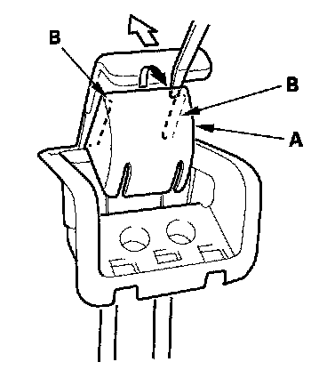
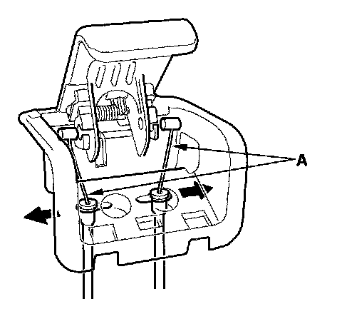

Second Row Seat-Back Recline Cable Replacement
Second Row Seat-back Recline Cable ReplacementSpecial Tools Required
KTC trim tool set SOJATP2014 *
* Available through the American Honda Tool and Equipment Program
NOTE:
- Use the appropriate tool from the KTC trim tool set to avoid damage when removing components.
- Take care not to bend the cable.
1. Remove the seat-back recline lever .

2. Carefully pry out the cover (A) with a flat-tip screwdriver at the gap while holding the lever fully open. Release the tabs (B), then remove the cover.

3. Disconnect the recline cables (A).
4. Install the second row seat-back recline cables in the reverse order of removal, and make sure the cables are connected securely.